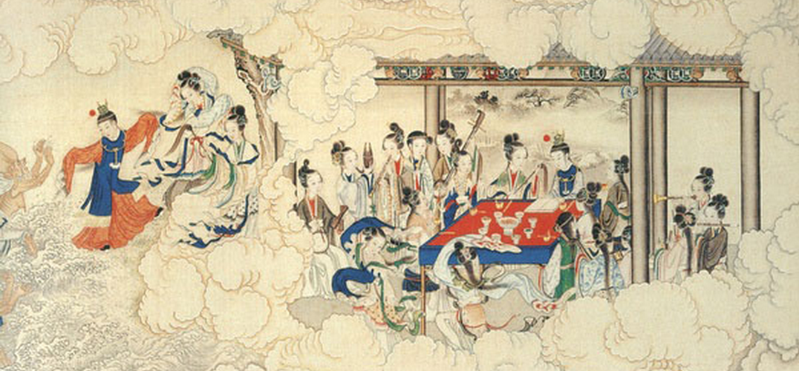
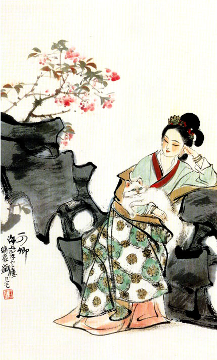

- 世人都晓神仙好........只有娇妻忘不了
- 痴心父母古来多........孝顺儿孙谁见了
- 你方唱罢我登场........反认他乡是故乡

About
Red Chamber
昨日黄土陇头埋白骨,今宵红绡帐底卧鸳鸯
17c
明
曹雪芹
1715-1763
王
东海缺少白玉床，龙王请来金陵王。王熙凤是《红楼梦》中主要的人物。别称凤辣子，是红楼梦主要场景贾家荣国府的实际当家人，其夫为贾琏，巧姐生母，因此下人称她为琏二奶奶，周汝昌认为红楼梦故事情节有两大脉路，一个是以贾宝玉为中心的，一个是以王熙凤为中心。林黛玉初到外婆家中，曹雪芹借由黛玉的眼睛、耳朵为读者勾勒出一位形容偕美、雍容华贵又气度非凡的女当家。
贾
贾不假，白玉为堂金作马。贾宝玉是《红楼梦》中的第一主角，与江南甄家甄宝玉同名同形,作者以“甄”、“贾”之姓暗喻“真”、“假”。贾宝玉由神瑛侍者脱胎而成，对绛珠仙草有灌溉之恩，因此有还泪一说，出生时口含一块由女娲补天遗留的大青石化成的玉。贾府中下人称其宝二爷，在大观园诗社中又有别号怡红公子、绛洞花王、富贵闲人。情榜评为‘情不情’。
薛
丰年好大雪，珍珠如土金如铁。宝钗性格内敛，为“才选凤藻宫”而教养，是中国传统文化陶臻出的“完美典范”。
元-----------原
迎-----------应
探-----------叹
惜-----------息
THE MISSING OF 40 CHAPTERS
失落的后40回
曹雪芹以其家族的命运投射在《红楼梦》一书。 在20世纪初，“红楼梦作者究竟是谁”这个问题曾经引起中国学界的争论，并持续至今。首先是胡适提出《红楼梦》后四十回和前八十回的作者并非同一人。然后经过许多人多番考证，普遍被接受的观点是：前八十回的作者为曹雪芹，后四十回的作者为高鹗和程伟元。
第十五次论战：潘重规与徐复观的笔战 第十六次论战：赵冈与余时英讨论《红楼梦》的两个世界 第十七次论战：唐德刚与夏志清之间的红楼风波 公案之一：宝黛孰优孰劣 公案之二：《红楼梦》后四十回的评价问题 公案之三：副册.又副册等二十四钗到底系何人 公案之四：《红楼梦》有没有反满思想 公案之五：第六十四、六十七回的真伪问题 公案之六：甲戌本《凡例》出自谁人之手。
周汝昌（1918年4月14日－2012年5月31日），本字禹言，号敏庵，后改字玉言，籍贯天津咸水沽。笔名：念述、苍禹、雪羲、顾研、玉工、石武、玉青、师言、茶客等。其祖父是天津八大家东门外天成号韩家账房先生，后自立门户，故家道不俗。就学于北京燕京大学西语系本科。周汝昌自二十几岁，双耳失聪。
踏雪寻梅薛宝琴-金陵十二钗
R
REAL OR
NOT REAL
It is a question.
假作真时真亦假。
"原来女娲氏炼石补天之时，于大荒山无稽崖炼成高经十二丈，方经二十四丈顽石三万六千五百零一块。娲皇氏只用了三万六千五百块，只单单剩了一块未用，便弃在此山青埂峰下。"